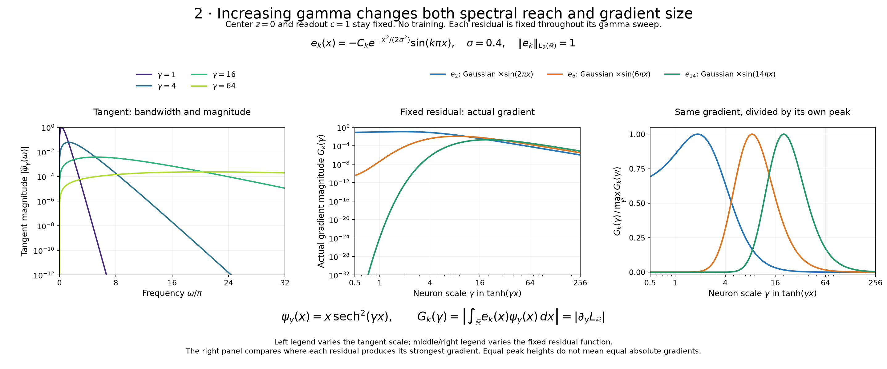
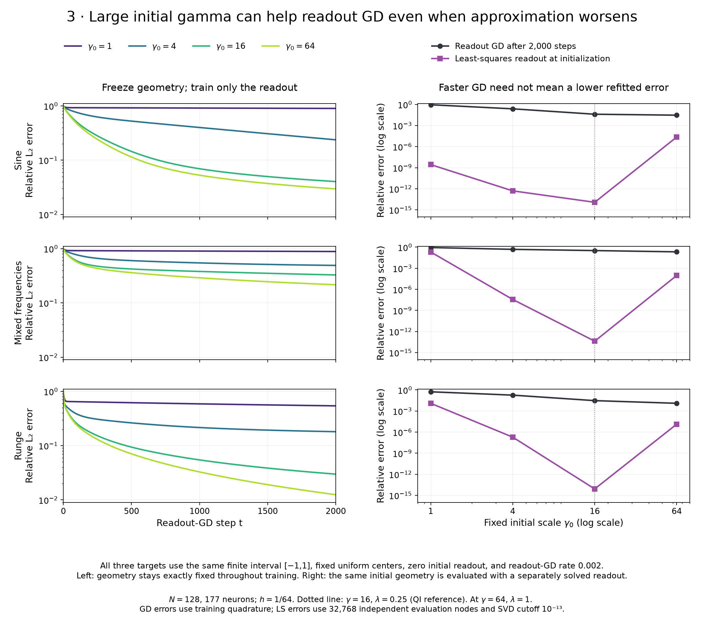
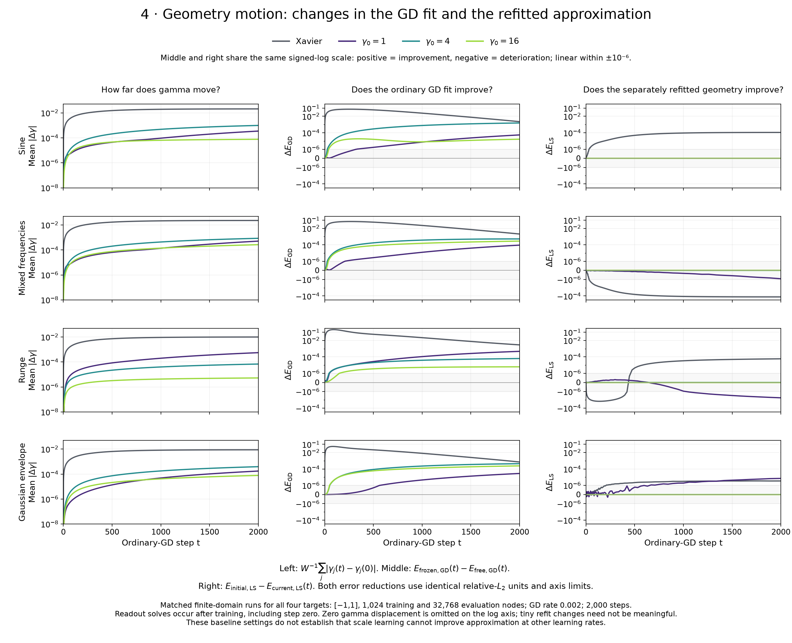
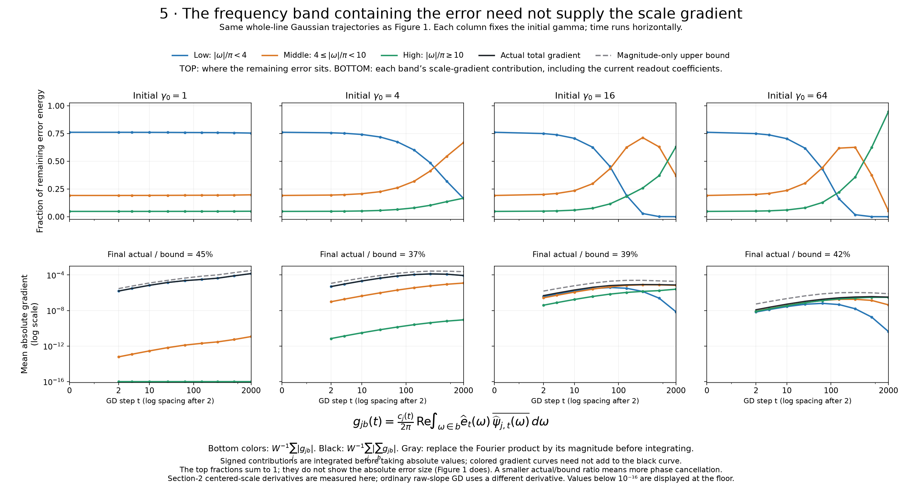

Gamma, Fourier response, and readout fitting
Five complementary views of the original GD experiments. Increasing gamma broadens frequency sensitivity, but does not make the scale gradient uniformly stronger. Large initial gamma can substantially improve readout GD even when a solved readout reveals worse approximation. The small geometry changes under baseline GD affect these two kinds of error differently.
Keep the objectives separate. Figures 1 and 5 follow the same whole-line Gaussian-envelope trajectories, with cancelling model tails. Figure 2 also uses whole-line residuals. Figures 3 and 4 use finite-interval training on [−1,1]; all four functions in Figure 4 use matched samples and model constraints.
1. Which frequencies does GD fit first?
The four rows start at gamma 1, 4, 16, and 64. The left column animates the analytic whole-line residual spectrum. The right column tracks the absolute error energy in three frequency bands, divided by the fixed target energy. The colored curves sum to the squared relative L₂ error.
Watch how quickly the low band falls and which bands remain. Large gamma enables much faster removal of low-band error in these runs; at small gamma, appreciable low-band error persists. That matters to Section 2: the assumption of an already depleted low-frequency residual does not hold equally well across initializations.

2. What does increasing gamma do to sensitivity?
The left panel changes only the scale of one tangent, ψγ(x) = x sech²(γx). Its spectrum becomes broader, while its overall magnitude falls. The other panels hold each of three Gaussian-sine residuals fixed and measure the actual pairing |∫ ekψγ dx| as gamma varies. The center stays at zero and the readout coefficient stays at one.
Each residual has a range of gamma where its gradient is strongest. Increasing gamma first helps and eventually hurts, even without residual depletion or changing readout coefficients. The right panel divides each curve by its own maximum to show the preferred range; those equal heights do not imply equal gradient strength.

3. Does larger gamma help the readout or the approximation?
Geometry is frozen throughout every run in the left column. Only readout coefficients train. The right column compares the resulting GD error after 2,000 steps with the error obtained by solving the readout at initialization.
Moving from gamma 16 to 64 improves readout GD, while worsening the numerical least-squares approximation for each displayed target. This isolates a readout-fitting benefit of larger initial gamma: no geometry learning is required for that benefit. It does not mean larger gamma always worsens approximation; the lower-gamma points show why that distinction matters.

4. What does the geometry movement actually improve?
The left column measures mean absolute gamma displacement from initialization. The middle subtracts free-geometry GD error from frozen-geometry GD error. The right subtracts the current geometry’s separately refitted error from the initial geometry’s refitted error. Positive means improvement; negative means deterioration. The two error-reduction columns use identical units and signed-log axes.
Geometry motion helps the actual GD fit, but yields much smaller changes in refitted accuracy. The expanded axes preserve two qualifications: Xavier’s benefit to the current GD fit can be substantial early and shrink later; refitted errors do change slightly, with both improvements and deterioration. The evidence supports a large difference in these benefits, rather than an exact claim of zero approximation change.

5. Which residual frequencies supply the scale gradient?
The top row shows each band’s fraction of the remaining error energy. The bottom integrates the complex Fourier residual–tangent product within each band, including the current readout coefficient. Only after integration do we take the magnitude and average across neurons. These are actual signed band contributions before the final absolute value.
A band can hold most of the error without supplying most of the scale gradient. Higher gamma shifts the gradient’s contributions toward higher frequencies, while the total gradient can be smaller. Black is the total after adding signed band contributions; gray is the magnitude-only upper bound. Colored magnitudes need not sum to black because contributions can cancel.
